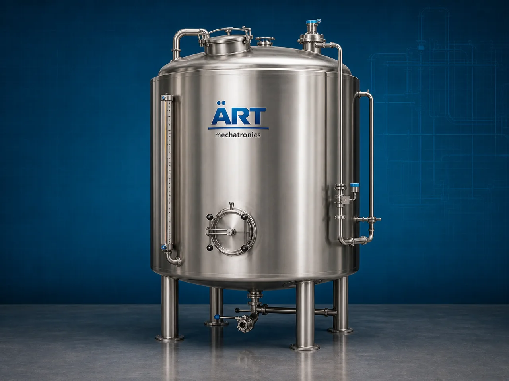

Storage Tank (Industrial Liquid, Chemical & Bulk Material Storage System)
A Storage Tank, also known as an Industrial Storage Tank or Bulk Material Storage System, is a heavy-duty industrial equipment designed for safe storage, holding, processing, mixing, buffering, and transfer of liquids, chemicals, oils, food products, water, powders, slurry, and industrial materials.

About the Storage Tank
Storage tank systems are widely used for:
- Liquid storage
- Chemical storage
- Water storage
- Food ingredient holding
- Process material buffering
- Industrial bulk material storage
The machine improves:
- Material storage efficiency
- Process continuity
- Factory organization
- Product safety and hygiene
- Production automation
- Bulk material management
Industrial storage tanks are manufactured using:
- Stainless steel construction
- Mild steel construction
- Jacketed or insulated designs
- Vertical and horizontal tank configurations
to ensure safe and reliable storage under industrial operating conditions.
Storage tanks are widely used in industries such as:
Food processing industries
Pharmaceutical industries
Chemical industries
Beverage industries
Dairy industries
Water treatment plants
Oil & lubricant industries
Cosmetic industries
where safe, hygienic, and efficient material storage is essential.
The tank is highly suitable for:
- Water storage
- Chemical storage
- Syrup storage
- Oil storage
- Liquid ingredient holding
- Process tank applications
ART Mechatronics offers high-performance storage tanks, engineered for industrial durability, hygienic operation, corrosion resistance, and reliable long-term performance.
Working Principle of Storage Tank
Liquids, powders, slurry, or industrial materials are filled into storage tank through inlet system
Tank stores materials safely under controlled conditions
Material remains protected from contamination and external exposure
Storage tanks may include:
- Agitators
- Stirrers
- Mixing systems
- Recirculation arrangements for continuous product uniformity.
Tanks can include: Jacketed heating systems Insulation Cooling arrangements for temperature-sensitive products.
Optional automation systems include: Level sensors PLC controls Load cells Flow monitoring systems
Material discharged through outlet valves or pumping systems for further processing or transfer
Types of Storage Tanks
- 1. Stainless Steel Storage Tank
Designed for: ✔ Hygienic food, pharma, and dairy applications
- 2. Mild Steel Storage Tank
Suitable for: ✔ Industrial and chemical storage applications
- 3. Jacketed Storage Tank
Uses: ✔ Heating or cooling jackets for temperature-controlled operations.
- 4. Vertical Storage Tank
Designed for: ✔ Space-saving industrial storage systems
- 5. Horizontal Storage Tank
Suitable for: ✔ Large-volume liquid storage applications
- 6. Agitated Storage Tank
Uses: ✔ Mixing and agitation systems for material uniformity.
Industries Using Storage Tanks
🍃 Food Processing Industry Syrup, oil, and ingredient storage systems 💊 Pharmaceutical Industry Hygienic liquid and chemical storage systems ⚗️ Chemical Industry Chemical and solvent storage systems 🥛 Dairy Industry Milk and dairy product holding tanks 🥤 Beverage Industry Beverage syrup and liquid storage systems 💧 Water Treatment Industry Water storage and process tanks 🛢️ Oil & Lubricant Industry Oil and lubricant storage systems 🧴 Cosmetic Industry Cosmetic liquid and cream storage systems
Features & Advantages
- Safe and hygienic material storage
- Heavy-duty industrial construction
- Corrosion-resistant tank design
- Optional mixing and agitation systems
- Temperature-controlled jacketed options available
- Continuous industrial operation
- Easy cleaning and maintenance
- High-capacity bulk material storage capability
- Easy integration with industrial process systems
Technical Highlights
Tank Type: Vertical tank Horizontal tank Jacketed tank Agitated tank Construction: Stainless Steel (SS304 / SS316) Mild Steel (MS) Capacity: Small process tanks to large industrial storage tanks Features: Agitator system Heating jacket Insulation CIP cleaning system Automation: Semi-automatic Fully automatic PLC-based systems
Turnkey Storage Tank Solutions
ART Mechatronics offers: Complete industrial storage tank systems Jacketed and insulated storage solutions Mixing and agitation tank systems Pipeline and pumping integration systems Installation & commissioning After-sales service & AMC
Why Choose Art Mechatronics
Expertise in industrial storage and process systems Customized tank solutions for multiple industries High-performance and durable industrial construction Hygienic and corrosion-resistant designs Proven industrial performance across sectors
Applications
Food Processing Plants Pharmaceutical Manufacturing Units Chemical Industries Dairy Plants Beverage Production Facilities Water Treatment Plants
Industries that use the Storage Tank
Related Storage & Elevation machines
Get pricing & specs for the Storage Tank
Share the product, target capacity, current process and plant location. These details help our engineers discuss the right machine or line configuration.
One partner, from design to start-up
ART Mechatronics designs, manufactures, installs and commissions your Storage Tank solution with regional presence in India, UAE and Thailand.